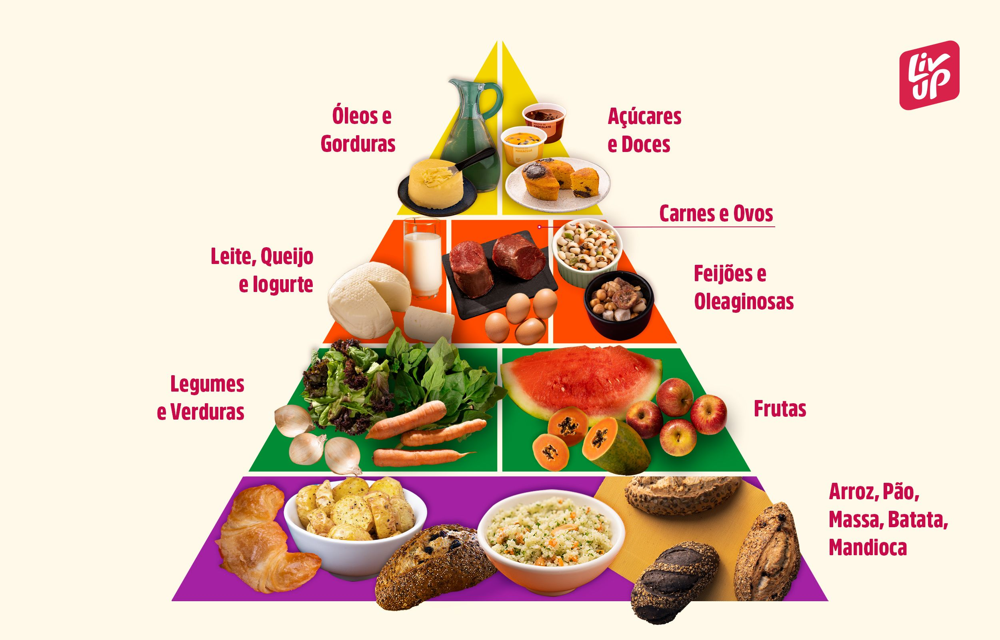

Sobre o Projeto
O que é o VidaSaudável?
Este site foi criado como parte do Projeto Integrador da disciplina de Redes de Computadores. O objetivo é demonstrar a integração entre o desenvolvimento de uma página web funcional e sua hospedagem em um servidor configurado no Cisco Packet Tracer.
O tema escolhido é saúde e bem-estar — um assunto relevante para o cotidiano de todos, que permite explorar diferentes elementos web como tabelas, formulários, listas, interatividade com JavaScript e design responsivo.
